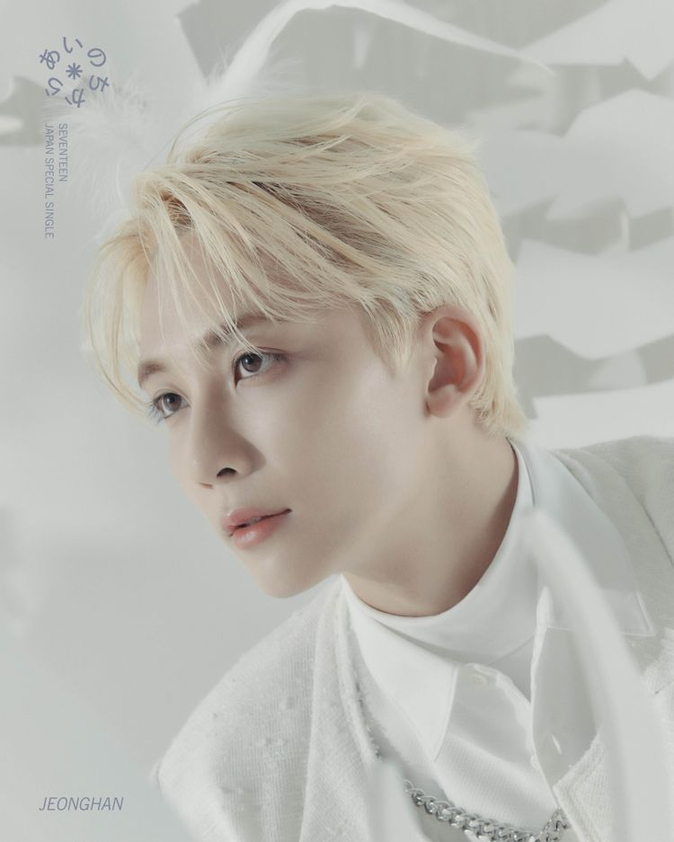

SEVENTEEN
정한
원우
호시
정한

세븐틴의
1004
, 천사 정한입니다!
나무위키
로 이동
대한민국 13인조 보이그룹 세븐틴의 멤버. 보컬팀 소속이며 서브보컬 포지션을 맡고 있다.
메인 캐치프레이즈인 "천사"는 본인의 생일인 10월 4일에서 따온 것이다.
그러나 생일뿐만 아니라 비주얼과 성격도 천사 같은 멤버.
데뷔 초 자기소개를 할 땐 멤버들에게 안녕바다의 별빛이 내린다의 후렴 부분을 부르게 하기도 했다.